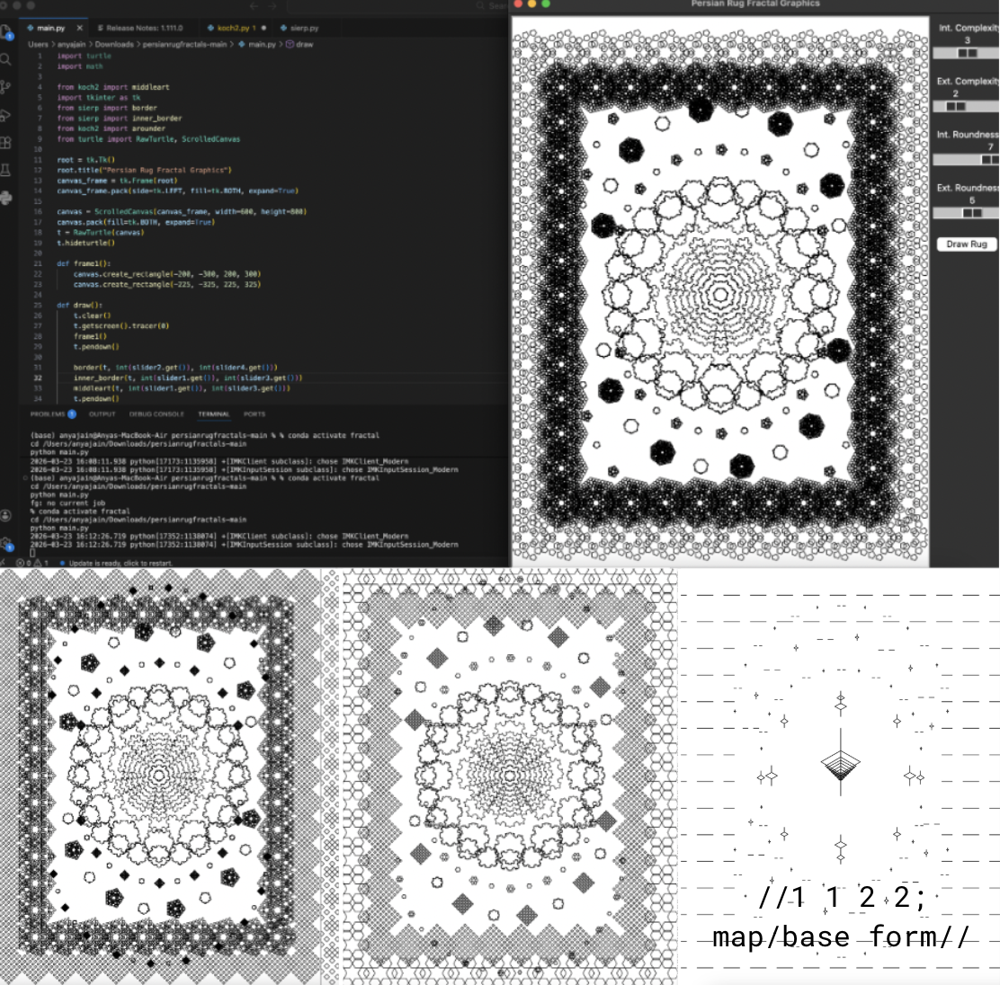

//expanded project
[Persian Rugs - Fractals-Based Graphics]
The goals of this project were to emulate the look of Persian rugs using recursively-defined shapes and parameterize geometric patterns. Slider tools control shape parameters--recursion depth (complexity) and number of sides (roundness)--to form different "rugs." Used shapes based on Koch Snowflakes and Sierpinski Triangles to create geometric motifs with a traditional medallion-style rug layout. Modified Deterministic Fractals, creating unique patterns: -Koch: Retained the fractal generator of the snowflake (equilateral triangle) but defined the initiator shape as a parameter -Sierpinski: Fixed the scaling factor at 0.5 for all n-flakes; child shape centered at vertex